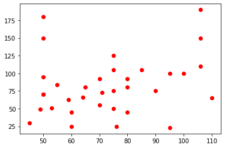
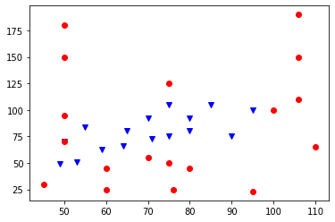
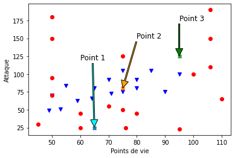
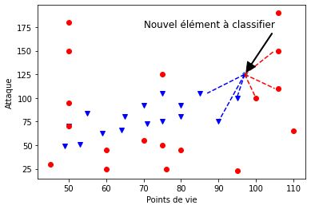
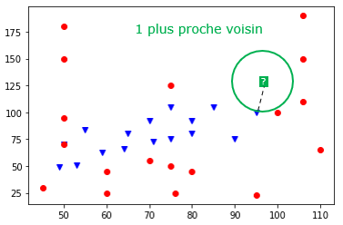
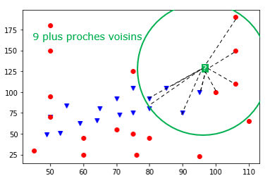

| Thème 5 : Algorithmique |
|---|
| 21 | Algorihtme des k-plus proches voisins |
|---|
Introduction⚓︎
L'algorithme kNN (k-nearest neighbors) ou kppv (algorithme des k-plus proches voisins) est un algorithme (parmi les plus élémentaires) utilisé en intelligence artificielle.
Note
L'algorithme kNN est un algorithme de classification et d'apprentissage supervisé :
- Classification : on cherche à regrouper les individus de la population étudiée en classes «homogènes».
- Apprentissage supervisé : le programmeur ne donne pas de "critère explicite" pour la classification mais des données de référence déjà réparties dans les classes. C'est par «comparaison» avec ces données que l'ordinateur pourra classer les nouvelles données.
L'idée générale est la suivante :
- On dispose d'une population statistique avec des mesures sur certains attributs des individus de cette population.
- Les individus se répartissent en plusieurs classes, plus ou moins bien caractérisées par les valeurs des attributs.
- Pour décider de la classe d'un nouvel individu, on compare ses attributs avec ceux des individus déjà classés.
Prenons l'exemple d'une population d'éléphants répartis en deux classes : les éléphants d'Afrique et les éléphants d'Asie.
Les éléphants d'Afrique ont des oreilles plus grandes que les éléphants d'Asie, l'éléphant d'Afrique est plus grand que l'éléphant d'Asie.
Les attributs utilisés pourraient donc être :
- taille de l'éléphant,
- taille des oreilles.
Arrive un nouvel individu.
On ne sait pas a priori de quelle classe il relève. Pour le décider, on décide de comparer les valeurs de ses attributs (hauteur de l'éléphant, taille des oreilles) à ceux de la population déjà répartie en classe.
Le problème est que, parmi les éléphants d'Asie il y en a des plus gros (qui se rapprochent donc de l'éléphant d'Afrique) ou avec de plus grandes oreilles. De même les éléphants d'Afrique ne sont pas uniformes, il en existe des plus petits, etc...
Bref, les attributs choisis ne permettent pas nécessairement de conclure de façon évidente. On va donc comparer notre nouvel individu à tous les individus présents. Et par exemple retenir les k=3 éléphants ayant des attributs les "plus proches" de notre individu (on a choisi k=3 mais on peut choisir k=4 ou une autre valeur de k).
Si parmi les k individus les plus proches de notre nouvel arrivant, il y a plus d'éléphants d'Afrique que d'éléphants d'Asie, on décide qu'il s'agit d'un éléphant d'Afrique.
La décision n'est évidemment pas absolument fiable (et il peut arriver qu'en changeant la valeur de k, on change de conclusion!) mais avec une population de départ suffisamment importante et quelques heuristiques pour le choix de k, le principe donne de bons résultats dans un certain nombre de contextes.
Activité d'introduction⚓︎
Objectifs :
- introduire visuellement les problèmes de classification
- revoir les notions sur le traitement de données en tables
Nous allons travailler avec le fichier pokemons.csv contenant certaines caractéristiques de Pokémons.
Chaque Pokémon du fichier est caractérisé par :
- son type,
- ses points de vie
- et la valeur de son attaque.
Pour simplifier, nous ne considérons que deux types de Pokémon : Eau et Psy.
On peut mémoriser les données du fichier csv dans une table pokemons afin de pouvoir travailler sur les données.
import csv
fichier = open('data/pokemons.csv', 'r', encoding = 'UTF-8')
t = csv.DictReader(fichier, delimiter=';')
pokemons = [dict(ligne) for ligne in t] # création et construction du tableau par compréhension
fichier.close()
On peut alors afficher le contenu de la table pokemons.
pokemons
Question 1
Quel est le type de données des éléments du tableau pokemons ?
Prenons le premier Pokemon de la table (n'oubliez pas d'exécuter la cellule ci-dessous pour que la variable pokemon1soit créée).
pokemon1 = {'Nom': 'Aligatueur', 'Type': 'Eau', 'Points de vie': '85', 'Attaque': '105'}
Question 2
Ecrivez les instructions permettant d'accéder à son type, puis à son nombre de points de vie et enfin à sa valeur d'attaque.
Question 3
Quel est le nom du pokémon n°27 de la table pokemons ?
Récupérer des données simples⚓︎
Imaginons que nous souhaitions connaître la valeur d'attaque du Pokémon 'Groret'. La méthode la plus naturelle est de parcourir toute la table jusqu'à trouver ce Pokémon et d'afficher sa valeur d'attaque.
for p in pokemons:
if p['Nom'] == 'Groret':
print(p['Attaque'])
Question 4
Ecrivez une fonction type_de(nom, pokemons) qui renvoie le type du pokemon appelé nom_pokemon (chaîne de caractères) de la table pokemons. Quelques assertions devant être vérifiées par votre fonction sont données ci-dessous.
def type_de(nom_pokemon, pokemons):
for p in ...:
if ... == nom_pokemon:
return ...
assert type_de('Symbios', pokemons) == 'Psy'
assert type_de('Clamiral', pokemons) == 'Eau'
Sélection de lignes⚓︎
Il est très rapide de sélectionner les lignes d'une table qui nous intéressent pour créer une nouvelle table.
Question 5
A partir de la table de départ, créer une nouvelle table contenant tous les Pokémons dont la valeur d'attaque vaut 80.
#méthode 1 :
pokemon_attaque_80bis=[]
for p in ...:
if ... == 80:
...
#Méthode 2 : par compréhension :
pokemon_attaque_80 = [...]
Vous noterez qu'il était impératif de convertir la chaîne de caractères renvoyée par
p['Attaque']en un entier pour faire la comparaison avec 80.
Question 6
Créez une table resistants contenant les Pokemons dont les points de vie sont supérieurs ou égaux à 100.
Question 7
Créez une table pokemons_eau et une table pokemons_psy contenant respectivement tous les Pokémons de type 'Eau'.
Si les deux tests suivants ne sont pas validés, vous devez reprendre la question.
assert len(pokemons_eau) == 16
assert len(pokemons_psy) == 18
Classification des Pokemons⚓︎
Nous allons utiliser la bibliothèque matplotlib pour représenter graphiquement nos données sur les Pokémons.
Travail préliminaire⚓︎
Le code suivant permet de représenter un nuage de points dont les coordonnées sont stockées dans deux tableaux.
#%matplotlib inline
import matplotlib.pyplot as plt
X = [0, 2, 5, 9, 7] # tableau avec les abscisses
Y = [5, 7, 12, 3, 8] # tableau avec les ordonnées
plt.plot(X,Y,'ro') # r pour red, o pour un cercle. voir https://matplotlib.org/api/markers_api.html
plt.show()
plt.close()
Question 8
Rendez-vous à l'adresse https://matplotlib.org/api/markers_api.html. Modifiez le code précédent pour remplacer les cercles rouges par des carrés bleus.
Question 9
Créer deux tableaux points_de_vie et valeur_attaque puis représenter dans un repère les différents Pokémons en fonction de leurs points de vie (en asbcisse) et de leus valeurs d'attaque (en ordonnée).
points_de_vie=[]
for p in ...:
points_de_vie.....
valeur_attaque = []
pass
plt.plot(points_de_vie, valeur_attaque, 'ro') # construction du graphique
plt.show() # affichage du graphique
plt.close()

Tip
points_de_vie = [int(p['Points de vie']) for p in pokemons]
valeur_attaque = [int(p['Attaque']) for p in pokemons]
plt.plot(points_de_vie, valeur_attaque, 'ro')
plt.show() # affichage du graphique
plt.close()
Classification selon le type⚓︎
Question 9
Faites apparaître sur le même graphique, les Pokémons de type 'Eau' en bleu et les Pokémons de type 'Psy' en rouge. On mettra, comme précédemment, leurs points de vie en abscisses et leurs valeurs d'attaques en ordonnées.
#%matplotlib inline
import matplotlib.pyplot as plt
points_de_vie1 = [] # construction du tableau des points de vie
valeur_attaque1 = [] # construction du tableau des valeurs d'attaque
points_de_vie2 = [] # construction du tableau des points de vie
valeur_attaque2 = [] # construction du tableau des valeurs d'attaque
plt.plot(points_de_vie1, valeur_attaque1, 'vb') # construction du graphique
plt.plot(points_de_vie2, valeur_attaque2, 'ro') # construction du graphique
plt.show() # affichage du graphique
plt.close()
Tip
#%matplotlib inline
import matplotlib.pyplot as plt
points_de_vie1 = [int(p['Points de vie']) for p in pokemons_eau] # construction du tableau des points de vie
valeur_attaque1 = [int(p['Attaque']) for p in pokemons_eau] # construction du tableau des valeurs d'attaque
points_de_vie2 = [int(p['Points de vie']) for p in pokemons_psy] # construction du tableau des points de vie
valeur_attaque2 = [int(p['Attaque']) for p in pokemons_psy] # construction du tableau des valeurs d'attaque
plt.plot(points_de_vie1, valeur_attaque1, 'vb') # construction du graphique
plt.plot(points_de_vie2, valeur_attaque2, 'ro') # construction du graphique
plt.show() # affichage du graphique
plt.close()
Vous devez obtenir un graphique similaire à celui ci-dessous dans lequel les points bleus désignent les Pokémons de type 'Eau' et les points rouges ceux de type 'Psy'.

La répartition des points laisse apparaître assez clairement deux classes.
Question 10
- Un nouveau Pokémon a les caractéristiques suivantes : (points de vie, attaque)= (65, 25). Si vous deviez prédire son type, quel serait-il ?
- Même question avec un Pokémon de caractéristiques (points de vie, attaque)= (75, 80).
- Même question avec un Pokémon de caractéristiques (points de vie, attaque) = (95,125).
Tip
import matplotlib.pyplot as plt
points_de_vie1 = [int(p['Points de vie']) for p in pokemons_eau] # construction du tableau des points de vie
valeur_attaque1 = [int(p['Attaque']) for p in pokemons_eau] # construction du tableau des valeurs d'attaque
points_de_vie2 = [int(p['Points de vie']) for p in pokemons_psy] # construction du tableau des points de vie
valeur_attaque2 = [int(p['Attaque']) for p in pokemons_psy] # construction du tableau des valeurs d'attaque
plt.plot(points_de_vie1, valeur_attaque1, 'vb') # construction du graphique
plt.plot(points_de_vie2, valeur_attaque2, 'ro') # construction du graphique
plt.plot(65,25, 'X') # construction du graphique
plt.plot(75,80, 'X') # construction du graphique
plt.plot(95,125, 'X') # construction du graphique
plt.xlabel('Points de vie')
plt.ylabel('Attaque')
plt.annotate('Point 1', xy=(65, 25), xytext=(60, 120), fontsize=12,
arrowprops={'facecolor':'cyan', 'width':2,'shrink':0.01})
plt.annotate('Point 2', xy=(75, 80), xytext=(80, 150), fontsize=12,
arrowprops={'facecolor':'orange', 'width':2,'shrink':0.01})
plt.annotate('Point 3', xy=(95, 125), xytext=(95, 175), fontsize=12,
arrowprops={'facecolor':'green', 'width':2,'shrink':0.01})
plt.show() # affichage du graphique
plt.close()

Algorithme des k plus proches voisins⚓︎
Abrégé kppv en français. En anglais, on dit k nearest neighbors souvent abrégé knn.
L’algorithme des k plus proches voisins appartient à la famille des algorithmes d’apprentissage automatique (machine learning) qui constituent le poumon de l'intelligence artificielle actuellement.
Pour simplifier, l'apprentissage automatique part souvent de données (data) et essaye de dire quelque chose des données qui n'ont pas encore été vues : il s'agit de généraliser, de prédire.
Exemple d'introduction
On dispose de données sur 34 Pokémons : leur type (Psy ou Eau), leur points de vie et la valeur de leurs attaques. On peut représenter ces données graphiquement, avec les points de vie en abscisses et les valeurs d'attaque en ordonnées.
Les Pokémons de type "Eau" sont représentés pas les points bleus, et ceux de type "Psy" par les points rouges.
Peut-on prédire le type d'un nouveau Pokemon inconnu ?

Ce problème, qui demande à prédire à quelle catégorie, ou classe, appartient ce nouvel élément donné, est appelé problème de classification. L'algorithme des k plus proches voisins permet de trouver les k voisins les plus proches (si k = 5 on cherche les 5 voisins les plus proches) de ce nouvel élément dans le but de lui associer une classe plausible (Psy ou Eau, dans cet exemple).
Algorithme naïf des kppv⚓︎
A partir d'un jeu de données (par exemple, les données sur nos 34 Pokémons) et d'une donnée cible (le nouveau Pokemon à classifier), l'algorithme des \(k\) plus proches voisins détermine les \(k\) données les plus proches de la cible.
Voici un algorithme permettant de résoudre ce problème :
Données et préconditions :
- une table donnees de taille n contenant les données et leurs classes
- une donnée cible : cible
- un nombre k inférieur à n
- une règle permettant de calculer la distance entre deux données
Résultat : un tableau contenant les k plus proches voisins de la donnée cible.
Algorithme :
1. Créer une table distances_voisins contenant les éléments de la table donnees et leurs distances avec la donnée cible.
2. Trier les données de la table distances_voisins selon la distance croissante avec la donnée cible
3. Renvoyer les k premiers éléments de cette table triée.
import math
point_de_vie_cible=95
valeur_attaque_cible=125
distances_voisins=[]
for p in pokemons:
dist=math.sqrt((int(p['Points de vie'])-point_de_vie_cible)**2+(int(p['Attaque']) -valeur_attaque_cible)**2)
p['distance']=dist
for p in pokemons:
distances_voisins.append(p)
distances_voisins=sorted(distances_voisins, key=lambda k: k['distance'])
k=5
for i in range(k):
print(distances_voisins[i])
Et notre prédiction alors ?⚓︎
L'algorithmes des kppv en lui-même n'apporte pas la réponse à notre problème de classification puisqu'il ne fournit que les k plus proches voisins (et leurs classes) de notre donnée cible. Il reste donc une dernière étape pour prédire la classe de notre nouvel élément : pour cela, on choisit la classe majoritaire (la plus présente) dans les k plus proches voisins.
On est contents si k est impair car il ne peut pas y avoir d'ex-aequo !
Influence de la valeur de \(k\)⚓︎
La valeur de \(k\) est très importante, elle doit être choisie judicieusement car elle a une influence forte sur la prédiction. Regardons le résultat de la prédiction pour différentes valeurs de \(k\) sur notre exemple.
Exemple 1 : le 1 plus proche voisin
Si \(k = 1\), cela revient à chercher la donnée la plus proche de notre élément cible. Ici, on se rend compte que sa classe est "Eau" (point bleu) donc on classerait le nouveau Pokémon comme étant de type "Eau".

Exemple 2 : les 3 plus proches voisins
On se rend compte que la classe majoritaire dans les 3 plus proches voisins est "Psy" (2 points rouges contre 1 point bleu) donc on classerait le Pokemon inconnu comme étant de type "Psy".

Exemple 3 : les 9 plus proches voisins
On se rend compte que la classe majoritaire dans les 9 plus proches voisins est "Eau" (5 points bleus contre 4 points rouges) donc on classerait le Pokemon inconnu comme étant de type "Eau".

En poursuivant, si on choisit \(k=34\) (le nombre total de données), alors la prédiction serait toujours "Psy" car c'est la classe majoritaire de l'échantillon. Il est donc incorrect de penser que plus la valeur de \(k\) augmente meilleure sera la prédiction, c'est plus complexe que cela.
C'est bien beau tout ça, mais quelle valeur de \(k\) faut-il choisir ?
Choix de la valeur de \(k\) par expérimentation⚓︎
Pour trouver une bonne valeur de \(k\) il est possible d'appliquer le protocole expérimental suivant :
- Séparer les données en deux paquets : un paquet pour entraîner le modèle (90 % par exemple), un second pour tester le modèle (les 10% restants)
- Utiliser le premier paquet comme nouveau jeu de données et appliquer l'algorithme des kppv sur les éléments qui ont été retirés
- Comparer les réponses de l'algorithme avec les réponses attendues (on connaît la classe des éléments retirés donc on peut comparer)
En appliquant ce protocole à différentes valeurs de \(k\), on peut déterminer quelle valeur fournit les meilleurs résultats. Il est même judicieux de recommencer en retirant d'autres données pour affiner encore davantage la recherche de la meilleure valeur \(k\) : on parle alors de validation croisée qui est une méthode d'apprentissage.
Choix de la distance⚓︎
L'algorithme des plus proches voisins repose sur la distance entre deux données. Dans les exemples vus précédemment, c'est la distance "naturelle" qui a été choisie (celle "à vol d'oiseau").
Dans un repère orthonormé, si \(A\) et \(B\) ont pour coordonnées respectives \((x_A, y_A)\) et \((x_B, y_B)\) alors la distance entre ces deux points est donnée par la formule :
On parle alors de la distance euclidienne. Sachez cependant qu'il existe d'autres distances et vous en rencontrerez dans les exercices. Par exemple, on peut très bien imaginer que les valeurs sur l'axe des ordonnées ne nous intéressent pas et utiliser une distance ne prenant en compte que l'axe des abscisses avec la formule \(\text{distance}(A, B) = |x_B-x_A|\). Ainsi, sur notre exemple, et avec cette distance, la classe majoritaire des 9 plus proches voisins de notre nouveau Pokémon est "Psy" (6 points rouges contre 3 points bleus), ce qui donnerait une prédiction contraire à celle donnée en utilisant la distance "naturelle" (euclidienne).

Moralité : On voit donc que le choix de la distance n'est pas anodin et que ce choix peut aboutir à des prédictions différentes.
Remarque : Nous n'avons parlé ici que de distances géométriques qui ne s'appliquent qu'à des données chiffrées. Toutes les données ne sont pas adaptées à ce type de distance : si on veut comparer la distance entre deux chaînes de caractères, d'autres types de distances sont à considérer : la distance de Hamming ou la distance d'édition qui seront abordées en Terminale.
Un algorithme d'apprentissage ? d'IA ?⚓︎
Apprentissage par coeur⚓︎
La plupart des algorithmes d'apprentissage automatique cherchent à apprendre quelque chose du jeu de données qui lui est fourni, c'est-à-dire à remplacer les données par un modèle (une sorte de "règle" permettant de classer les données, de prendre une décision, etc.). Autrement dit, un tel algorithme tente de "comprendre" les données pour en déduire un modèle, on peut voir cela comme un apprentissage intelligent.
Pour illustrer cela de manière simplifiée, un algorithme d'apprentissage automatique intelligent chercherait par exemple, à partir des données, à délimiter deux "zones" séparant les Pokémons "Psy" des Pokémons "Eau". Il n'aurait alors plus besoin des données (des points) pour prédire la classe d'un nouvel élément car il suffirait de regarder dans quelle zone celui-ci se trouve (d'utiliser le modèle qu'il a deviné).

L'algorithme des k plus proches voisins n'a pas cette "intelligence" car il n'essaie pas de construire un modèle mais se sert des données elles-mêmes pour donner un résultat : on parle alors d'apprentissage par coeur.
Intelligence Artificielle⚓︎
L'algorithme des k plus proches voisins est-il alors un algorithme d'intelligence artificielle ?
L'apprentissage par coeur est clairement l'apprentissage le moins intelligent mais la réponse est OUI si on considère sa capacité de prédiction : classifier un élément qu'il n'a jamais vu.
Les données et l'apprentissage automatique⚓︎
Big data et deep learning⚓︎
Le deep learning (ou apprentissage profond) est une famille de méthode d'apprentissage automatique. En 2012, les techniques de deep learning ont réussi à fonctionner et obtenir des résultats spectaculaires. Ces résultats ont été rendus possibles notamment par l'arrivée de données en volume massifs (big data) permettant aux algorithmes d'apprendre à résoudre un problème. Ces données en masse permettent de disposer d'une importante quantité de données sur lesquelles entrainer et affiner les algorithmes.
Les stratégies mises en place par les géants du numérique (GAFAM) tournent entièrement autour de la récolte de données de leurs clients sur n'importe quel sujet pour "nourrir" leurs algorithmes d'apprentissage. C'est ainsi qu'Amazon arrive à nous proposer des "suggestions d'achat". Google quant à lui nous utilise lorsque nous devons prouver que nous ne sommes pas un robot. En effet, qui n'a pas déjà vu un écran de ce genre ?

En cliquant aux bons endroits, on assigne une classe aux différentes parties de l'image (feu de circulation ou non) et celles-ci viennent alimenter les bases de données sur lesquelles les algorithmes s'entraînent. Ils serviront ensuite aux voitures autonomes de Google à repérer les feux tricolores sur la route.
Qualité des données et dangers⚓︎
La qualité des données est primordiale dans l'apprentissage automatique car ce sont elles qui définissent presque entièrement la qualité des résultats des algorithmes. Voici quelques exemples, en vrac :
- Si la base de données utilisée pour entraîner un algorithme de détourage n'est constituée que de photos d'humains, il y a des fortes chances que l'algorithme ne parvienne pas à détourer un chat correctement. C'était le cas au départ pour l'algorithme du site remove.bg mais les données d'entraînement sont désormais plus complètes et les détourages fournissent des résultats impressionnants.
- L’algorithme mis en place à partir de 2015 par Amazon (source) pour faciliter le recrutement de talents utilisait des données de centaines de milliers de curriculum vitae (CV) reçus par Amazon au cours des dix dernières années en vue de noter de nouvelles candidatures. L’algorithme a été rapidement suspendu car il discriminait grandement les femmes. En effet, les CV d'entraînement comprenait une écrasante majorité d'hommes, l’algorithme ne laissant du coup aucune chance aux nouvelles candidates pourtant qualifiées. On dit dans ce cas que les données sont biaisées.
- Aux Etats-unis, ils prédisent les taux de criminalité dans les quartiers et déploient les effectifs policiers en conséquence. Mais les données sur lesquelles les systèmes sont entrainés sont également biaisés car déséquilibrés avec davantage de personnes de couleurs par exemple (voir source).
- ...
“ Your system is only as good as the data that you use to train it on ”
Kate Crawford, cofounder and co-director of AI Now
Conclusion⚓︎
- Nous avons vu que l'algorithme des \(k\) plus proches voisins faisait partie de la famille des algorithmes d'apprentissage automatique (machnine learning en anglais) qui se nourissent de données pour prédire des choses sur une donnée inconnue. En particulier, il permet de résoudre des problèmes de classification.
- L'algorithme de kppv permet de trouver les \(k\) voisins les plus proches d'une nouvelle donnée. Il est donc nécessaire de lui associer une distance pour apprécier cette notion de proximité.
- On peut alors prédire la classe d'une nouvelle donnée en prenant celle qui est majoritaire parmi ses plus proches voisins.
- Les prédictions varient selon la valeur de \(k\) et selon la distance choisie : en pratique, il est donc important de bien choisir cex deux données.
- Les algorithmes d'apprentissage automatique (IA) se sont beaucoup développés depuis les années 2010 grâce au big data qui leur permet de s'entraîner sur un très grand nombre de données.
- La qualité des résultats dépend grandement de la qualité des données d'entraînement : il est donc important de s'assurer de leur qualité pour éviter des biais pouvant être discriminants, racistes...